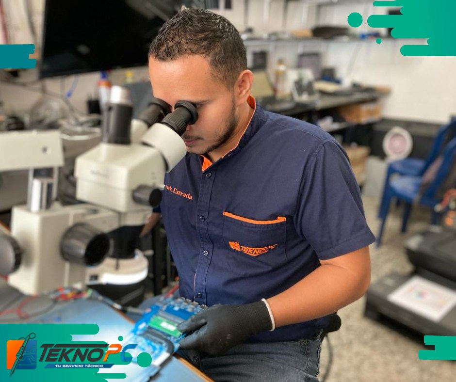
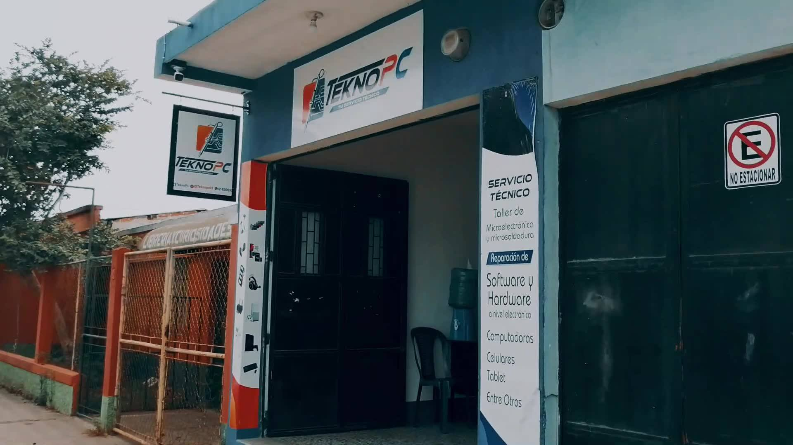

¿Qué es TeknoPC?
TeknoPC es una empresa que empezo en el 2018 con reparaciones de telefono, compus y otros dispositivos electronicos poco a poco esta empreza fue creciendo y aumentando su clientela en el 2022 cambio a ser una empreza la cual se especializo en reparacion de compus, televizores,, impresoras y televizores epero aun era una empreza poco conociada para 2024 esta empresa en noviembre abrio una nueva sucursal la cual aumento la clientela de esta empresa poco a poco fue agarrando mas poder en el mercado y junto con ello en diciembre de 2024 se abrio una tercera sucursal en el municipio de monjas jalapa el dueño Erick Emanuel Estrada Herera y su equipo han sabido llevar bien la situacion y saben como invertir su tiempo y dinero.
 